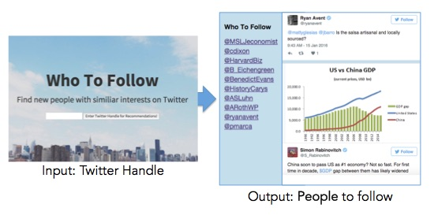

Hi there! I'm a data scientist and INSEAD MBA. This is a site about my interests; mainly data, machine learning, and business.
I recently completed the Galvanize Data Science Immersive program and I created Who-To-Follow for my capstone project.
The motivation behind Who-To-Follow was a personal frustration around finding quality content. Twitter can be an amazing learning resource or a cacophonous echo chamber, depending on who you follow. I used Graph Theory and NLP to create a content recommender that cuts through the noise and finds interesting people with your interests.
